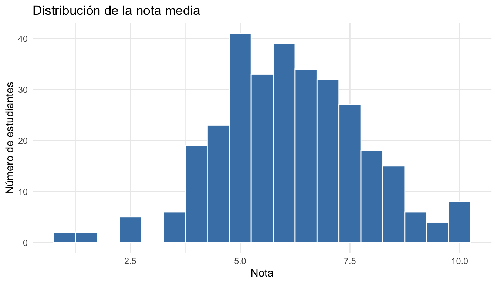
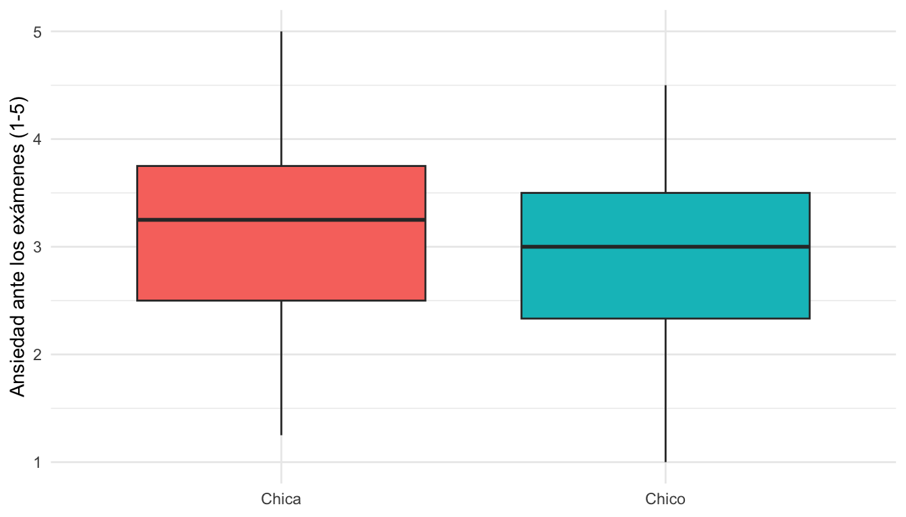
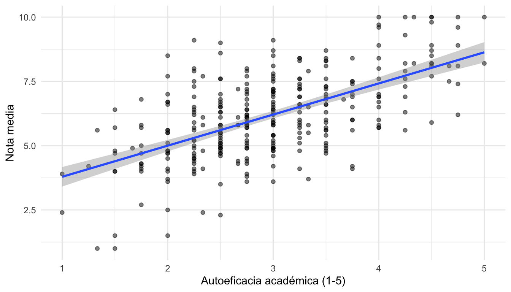
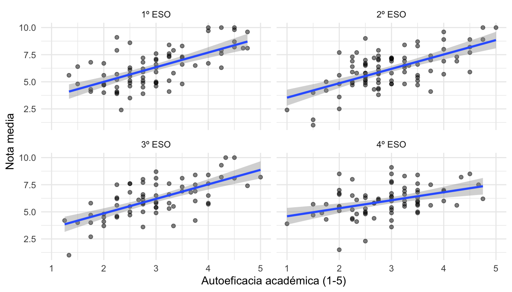
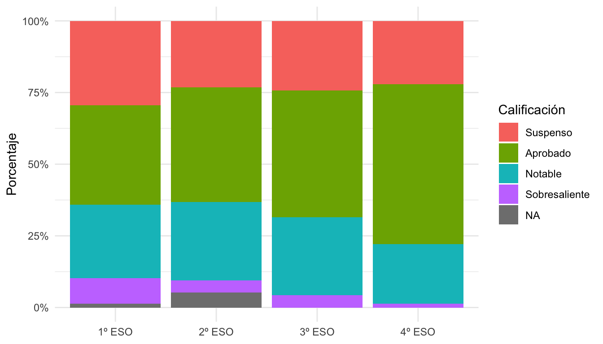
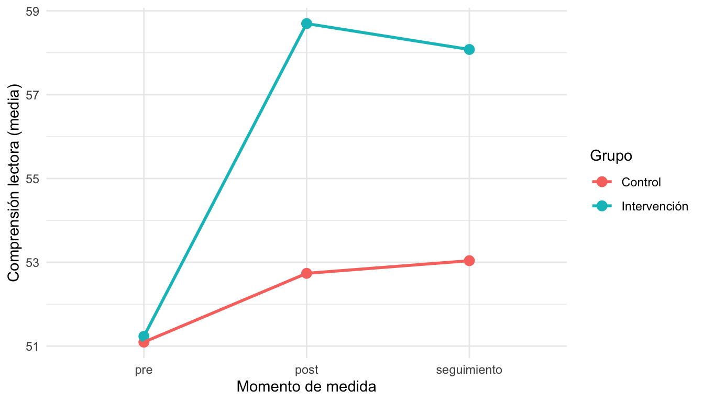

library(tidyverse)
library(psych)
encuesta <- readRDS("checkpoints/encuesta_limpia.rds")Sesión 2. De los datos a los resultados
Curso de iniciación a R. Departamento de Ciencias de la Educación, Universidad de Alcalá
| Bloque | Contenido |
|---|---|
| 2.1 | Transformar datos con dplyr |
| 2.2 | Escalas Likert: ítems invertidos, puntuaciones y fiabilidad |
| 2.3 | Reorganizar y combinar tablas |
| 2.4 | Gráficos con ggplot2 |
| 2.5 | Primeros análisis: correlación, prueba t y regresión |
| 2.6 | Ejercicio integrador y tu propio proyecto con renv |
Recuerda: los ejercicios están en sesion2_ejercicios.qmd, en tres niveles (básico, intermedio y reto).
Partimos de los datos que limpiamos en la sesión 1:
2.1. Transformar datos con dplyr
TipObjetivo
Seleccionar, filtrar, crear variables y resumir datos por grupos: las operaciones que harás en todos tus análisis.
Punto de control: encuesta <- readRDS("checkpoints/encuesta_limpia.rds")
El tidyverse y la “tubería” |>
El tidyverse es un conjunto de paquetes diseñados para el análisis de datos que comparten una misma filosofía y “gramática”. Lo cargamos con library(tidyverse). El paquete central para transformar datos es dplyr, que ofrece un conjunto de verbos (funciones) con nombres que dicen lo que hacen.
Todos los verbos reciben una tabla como primer argumento y devuelven otra tabla. Por eso se pueden encadenar con el operador |> (pipe o tubería, atajo Ctrl+Shift+MCtrl+Shift+M): el resultado de la izquierda pasa como primer argumento a la función de la derecha. Se lee como “y después”:
encuesta |> # toma la encuesta, y después
filter(...) |> # quédate con algunas filas, y después
select(...) |> # quédate con algunas columnas, y después
summarise(...) # resumeSi queremos guardar el resultado, lo asignamos a un nombre al principio:
resultado <- encuesta |>
filter(...)Operaciones con filas
Filtrar filas que cumplen una condición, con filter(). Se usan las comparaciones de la sesión 1, combinadas con & (Y) y | (O):
encuesta |>
filter(curso == "1º ESO")# A tibble: 78 × 19
marca_temporal id centro curso sexo edad m1 m2 m3 m4 a1
<chr> <chr> <fct> <fct> <fct> <dbl> <dbl> <dbl> <dbl> <dbl> <dbl>
1 05/10/2026 10:2… E001 C08 1º E… Chico 13 2 1 2 4 4
2 05/10/2026 13:5… E002 C03 1º E… Chico 13 4 3 3 2 4
3 05/10/2026 19:0… E009 C07 1º E… Chico 13 4 4 4 2 NA
4 05/10/2026 19:4… E010 C03 1º E… Chica 12 5 5 5 2 5
5 06/10/2026 02:0… E015 C02 1º E… Chica 13 3 3 4 3 3
6 06/10/2026 06:2… E020 C02 1º E… Pref… 12 2 4 2 5 4
7 06/10/2026 08:4… E024 C02 1º E… Chica 12 3 4 4 1 1
8 07/10/2026 04:2… E039 C05 1º E… Chico 12 4 3 3 3 2
9 07/10/2026 05:3… E040 C01 1º E… Pref… 12 5 5 5 1 3
10 07/10/2026 08:2… E043 C01 1º E… Chico 13 4 4 3 2 4
# ℹ 68 more rows
# ℹ 8 more variables: a2 <dbl>, a3 <dbl>, a4 <dbl>, ae1 <dbl>, ae2 <dbl>,
# ae3 <dbl>, ae4 <dbl>, nota <dbl>encuesta |>
filter(curso == "4º ESO" & nota < 5)# A tibble: 17 × 19
marca_temporal id centro curso sexo edad m1 m2 m3 m4 a1
<chr> <chr> <fct> <fct> <fct> <dbl> <dbl> <dbl> <dbl> <dbl> <dbl>
1 06/10/2026 05:2… E019 C07 4º E… Chico 15 2 2 1 5 2
2 06/10/2026 10:4… E026 C02 4º E… Chica 15 3 2 3 4 3
3 06/10/2026 21:1… E035 C03 4º E… Chica 16 2 3 3 3 4
4 07/10/2026 00:4… E037 C07 4º E… Chico 15 2 1 1 5 4
5 08/10/2026 06:1… E067 C08 4º E… Chica 15 3 2 3 4 5
6 08/10/2026 22:4… E089 C07 4º E… Chico 15 NA 2 2 5 1
7 09/10/2026 02:5… E094 C07 4º E… Chica 15 2 3 3 4 4
8 10/10/2026 10:2… E117 C03 4º E… Chica 16 2 2 2 5 5
9 11/10/2026 13:2… E144 C08 4º E… Chica 15 4 4 4 2 3
10 11/10/2026 21:4… E155 C05 4º E… Chica 16 1 1 2 4 2
11 12/10/2026 01:3… E161 C02 4º E… Chico 15 1 1 1 NA 4
12 13/10/2026 03:0… E190 C01 4º E… Chica 15 1 1 2 5 4
13 13/10/2026 15:1… E194 C09 4º E… Chico 15 3 4 2 2 3
14 14/10/2026 18:2… E219 C02 4º E… Chica 15 2 2 2 5 4
15 15/10/2026 04:5… E229 C07 4º E… Chico 15 1 1 2 5 4
16 17/10/2026 15:3… E278 C08 4º E… Chica 16 2 NA 2 5 2
17 19/10/2026 07:1… E319 C08 4º E… Chica 15 3 3 4 4 5
# ℹ 8 more variables: a2 <dbl>, a3 <dbl>, a4 <dbl>, ae1 <dbl>, ae2 <dbl>,
# ae3 <dbl>, ae4 <dbl>, nota <dbl>Para comprobar si un valor está en un conjunto, usamos %in%:
encuesta |>
filter(centro %in% c("C01", "C02", "C03"))# A tibble: 158 × 19
marca_temporal id centro curso sexo edad m1 m2 m3 m4 a1
<chr> <chr> <fct> <fct> <fct> <dbl> <dbl> <dbl> <dbl> <dbl> <dbl>
1 05/10/2026 13:5… E002 C03 1º E… Chico 13 4 3 3 2 4
2 05/10/2026 13:5… E003 C02 2º E… Chico 14 NA 2 3 3 4
3 05/10/2026 14:5… E005 C03 3º E… Chica 14 3 3 NA 2 3
4 05/10/2026 16:0… E006 C02 3º E… Chico 15 3 3 3 5 3
5 05/10/2026 18:0… E007 C01 4º E… Chico 15 5 4 4 1 3
6 05/10/2026 19:4… E010 C03 1º E… Chica 12 5 5 5 2 5
7 05/10/2026 20:2… E011 C02 3º E… Chico 15 3 4 3 4 3
8 06/10/2026 02:0… E015 C02 1º E… Chica 13 3 3 4 3 3
9 06/10/2026 04:2… E017 C03 2º E… Chico 13 3 4 2 2 3
10 06/10/2026 05:0… E018 C02 4º E… Chico 16 3 3 4 2 5
# ℹ 148 more rows
# ℹ 8 more variables: a2 <dbl>, a3 <dbl>, a4 <dbl>, ae1 <dbl>, ae2 <dbl>,
# ae3 <dbl>, ae4 <dbl>, nota <dbl>Y para quitar los casos sin nota, !is.na() (“que no sea NA”):
encuesta |>
filter(!is.na(nota))# A tibble: 314 × 19
marca_temporal id centro curso sexo edad m1 m2 m3 m4 a1
<chr> <chr> <fct> <fct> <fct> <dbl> <dbl> <dbl> <dbl> <dbl> <dbl>
1 05/10/2026 10:2… E001 C08 1º E… Chico 13 2 1 2 4 4
2 05/10/2026 13:5… E002 C03 1º E… Chico 13 4 3 3 2 4
3 05/10/2026 13:5… E003 C02 2º E… Chico 14 NA 2 3 3 4
4 05/10/2026 14:4… E004 C07 2º E… Chico 13 4 3 4 2 5
5 05/10/2026 14:5… E005 C03 3º E… Chica 14 3 3 NA 2 3
6 05/10/2026 16:0… E006 C02 3º E… Chico 15 3 3 3 5 3
7 05/10/2026 18:0… E007 C01 4º E… Chico 15 5 4 4 1 3
8 05/10/2026 18:1… E008 C04 4º E… Chico 15 5 5 2 3 3
9 05/10/2026 19:0… E009 C07 1º E… Chico 13 4 4 4 2 NA
10 05/10/2026 19:4… E010 C03 1º E… Chica 12 5 5 5 2 5
# ℹ 304 more rows
# ℹ 8 more variables: a2 <dbl>, a3 <dbl>, a4 <dbl>, ae1 <dbl>, ae2 <dbl>,
# ae3 <dbl>, ae4 <dbl>, nota <dbl>Ordenar con arrange(); para orden descendente, desc():
encuesta |>
arrange(desc(nota))# A tibble: 320 × 19
marca_temporal id centro curso sexo edad m1 m2 m3 m4 a1
<chr> <chr> <fct> <fct> <fct> <dbl> <dbl> <dbl> <dbl> <dbl> <dbl>
1 05/10/2026 23:4… E013 C07 2º E… Chico 14 3 3 5 2 NA
2 08/10/2026 01:3… E062 C09 3º E… Chica 14 5 4 5 2 2
3 08/10/2026 18:0… E082 C06 3º E… Chica 14 4 NA 5 2 2
4 09/10/2026 02:5… E095 C07 2º E… Chico 14 4 4 4 3 2
5 13/10/2026 23:0… E200 C02 1º E… Chico 12 5 3 5 1 2
6 17/10/2026 12:1… E274 C07 1º E… Chica 13 5 5 4 1 3
7 19/10/2026 01:4… E313 C07 1º E… Chico 12 5 5 5 1 2
8 15/10/2026 16:4… E238 C02 1º E… Chico 13 4 4 5 2 2
9 12/10/2026 03:3… E167 C02 1º E… Chica 12 4 5 4 1 1
10 05/10/2026 19:4… E010 C03 1º E… Chica 12 5 5 5 2 5
# ℹ 310 more rows
# ℹ 8 more variables: a2 <dbl>, a3 <dbl>, a4 <dbl>, ae1 <dbl>, ae2 <dbl>,
# ae3 <dbl>, ae4 <dbl>, nota <dbl>Operaciones con columnas
Seleccionar columnas con select(), por su nombre, por rango (m1:m4) o con funciones auxiliares como starts_with(). Un signo menos elimina columnas:
encuesta |>
select(id, curso, sexo, nota)# A tibble: 320 × 4
id curso sexo nota
<chr> <fct> <fct> <dbl>
1 E001 1º ESO Chico 5.5
2 E002 1º ESO Chico 4.1
3 E003 2º ESO Chico 7.7
4 E004 2º ESO Chico 4.8
5 E005 3º ESO Chica 7.5
6 E006 3º ESO Chico 8.1
7 E007 4º ESO Chico 6.8
8 E008 4º ESO Chico 7.8
9 E009 1º ESO Chico 6.8
10 E010 1º ESO Chica 9.6
# ℹ 310 more rowsencuesta |>
select(id, starts_with("ae"))# A tibble: 320 × 5
id ae1 ae2 ae3 ae4
<chr> <dbl> <dbl> <dbl> <dbl>
1 E001 3 3 4 2
2 E002 3 3 2 3
3 E003 2 2 4 2
4 E004 3 3 4 4
5 E005 4 4 2 3
6 E006 2 3 3 4
7 E007 2 4 3 5
8 E008 3 2 3 4
9 E009 4 2 3 2
10 E010 4 5 1 5
# ℹ 310 more rowsencuesta |>
select(-marca_temporal)# A tibble: 320 × 18
id centro curso sexo edad m1 m2 m3 m4 a1 a2 a3
<chr> <fct> <fct> <fct> <dbl> <dbl> <dbl> <dbl> <dbl> <dbl> <dbl> <dbl>
1 E001 C08 1º ESO Chico 13 2 1 2 4 4 4 3
2 E002 C03 1º ESO Chico 13 4 3 3 2 4 5 3
3 E003 C02 2º ESO Chico 14 NA 2 3 3 4 4 4
4 E004 C07 2º ESO Chico 13 4 3 4 2 5 5 3
5 E005 C03 3º ESO Chica 14 3 3 NA 2 3 2 4
6 E006 C02 3º ESO Chico 15 3 3 3 5 3 4 2
7 E007 C01 4º ESO Chico 15 5 4 4 1 3 4 3
8 E008 C04 4º ESO Chico 15 5 5 2 3 3 3 3
9 E009 C07 1º ESO Chico 13 4 4 4 2 NA 5 4
10 E010 C03 1º ESO Chica 12 5 5 5 2 5 4 3
# ℹ 310 more rows
# ℹ 6 more variables: a4 <dbl>, ae1 <dbl>, ae2 <dbl>, ae3 <dbl>, ae4 <dbl>,
# nota <dbl>Crear o modificar variables con mutate(), con pares nombre = expresión:
encuesta |>
mutate(
aprobado = nota >= 5,
nota_100 = nota * 10
) |>
select(id, nota, aprobado, nota_100)# A tibble: 320 × 4
id nota aprobado nota_100
<chr> <dbl> <lgl> <dbl>
1 E001 5.5 TRUE 55
2 E002 4.1 FALSE 41
3 E003 7.7 TRUE 77
4 E004 4.8 FALSE 48
5 E005 7.5 TRUE 75
6 E006 8.1 TRUE 81
7 E007 6.8 TRUE 68
8 E008 7.8 TRUE 78
9 E009 6.8 TRUE 68
10 E010 9.6 TRUE 96
# ℹ 310 more rowsPara recodificar en varias categorías, case_when() evalúa las condiciones en orden y asigna el valor de la primera que se cumple:
encuesta <- encuesta |>
mutate(
calificacion = case_when(
nota < 5 ~ "Suspenso",
nota < 7 ~ "Aprobado",
nota < 9 ~ "Notable",
nota >= 9 ~ "Sobresaliente"
),
calificacion = factor(calificacion,
levels = c("Suspenso", "Aprobado", "Notable", "Sobresaliente")),
ciclo = if_else(curso %in% c("1º ESO", "2º ESO"), "Primer ciclo", "Segundo ciclo")
)
encuesta |>
select(nota, calificacion, curso, ciclo)# A tibble: 320 × 4
nota calificacion curso ciclo
<dbl> <fct> <fct> <chr>
1 5.5 Aprobado 1º ESO Primer ciclo
2 4.1 Suspenso 1º ESO Primer ciclo
3 7.7 Notable 2º ESO Primer ciclo
4 4.8 Suspenso 2º ESO Primer ciclo
5 7.5 Notable 3º ESO Segundo ciclo
6 8.1 Notable 3º ESO Segundo ciclo
7 6.8 Aprobado 4º ESO Segundo ciclo
8 7.8 Notable 4º ESO Segundo ciclo
9 6.8 Aprobado 1º ESO Primer ciclo
10 9.6 Sobresaliente 1º ESO Primer ciclo
# ℹ 310 more rowsResumir datos
Contar con count():
encuesta |>
count(curso)# A tibble: 4 × 2
curso n
<fct> <int>
1 1º ESO 78
2 2º ESO 95
3 3º ESO 70
4 4º ESO 77encuesta |>
count(curso, calificacion)# A tibble: 18 × 3
curso calificacion n
<fct> <fct> <int>
1 1º ESO Suspenso 23
2 1º ESO Aprobado 27
3 1º ESO Notable 20
4 1º ESO Sobresaliente 7
5 1º ESO <NA> 1
6 2º ESO Suspenso 22
7 2º ESO Aprobado 38
8 2º ESO Notable 26
9 2º ESO Sobresaliente 4
10 2º ESO <NA> 5
11 3º ESO Suspenso 17
12 3º ESO Aprobado 31
13 3º ESO Notable 19
14 3º ESO Sobresaliente 3
15 4º ESO Suspenso 17
16 4º ESO Aprobado 43
17 4º ESO Notable 16
18 4º ESO Sobresaliente 1Resumir con summarise(): cualquier función que devuelva un único valor (mean, sd, median, min, max…) y n() para el número de casos:
encuesta |>
summarise(
n = n(),
media_nota = mean(nota, na.rm = TRUE),
dt_nota = sd(nota, na.rm = TRUE)
)# A tibble: 1 × 3
n media_nota dt_nota
<int> <dbl> <dbl>
1 320 6.15 1.66Resumir por grupos
Lo más habitual es combinar summarise() con group_by(), de modo que el resumen se calcula para cada grupo.
encuesta |>
group_by(curso) |>
summarise(
n = n(),
media_nota = mean(nota, na.rm = TRUE),
dt_nota = sd(nota, na.rm = TRUE)
)# A tibble: 4 × 4
curso n media_nota dt_nota
<fct> <int> <dbl> <dbl>
1 1º ESO 78 6.29 1.78
2 2º ESO 95 6.14 1.73
3 3º ESO 70 6.17 1.71
4 4º ESO 77 5.99 1.40Se puede agrupar por varias variables:
encuesta |>
filter(sexo != "Prefiero no decirlo") |>
group_by(curso, sexo) |>
summarise(
n = n(),
media_nota = mean(nota, na.rm = TRUE),
.groups = "drop"
)# A tibble: 8 × 4
curso sexo n media_nota
<fct> <fct> <int> <dbl>
1 1º ESO Chica 39 6.24
2 1º ESO Chico 34 6.41
3 2º ESO Chica 44 6.15
4 2º ESO Chico 47 6.14
5 3º ESO Chica 26 6.03
6 3º ESO Chico 41 6.22
7 4º ESO Chica 37 5.59
8 4º ESO Chico 40 6.35
Tip
Para ver cualquier resultado como hoja de cálculo, añade |> View() al final de la cadena.
2.2. Escalas Likert
TipObjetivo
Invertir ítems, calcular la puntuación de cada escala y estimar su fiabilidad.
Punto de control: encuesta <- readRDS("checkpoints/encuesta_limpia.rds")
Al final del bloque: checkpoints/encuesta_escalas.rds
Ítems invertidos
En el diccionario de datos vimos que dos ítems están redactados en sentido contrario al resto de su escala:
m4: Solo estudio porque me obligan (motivación).ae3: Cuando algo es difícil, me rindo enseguida (autoeficacia).
Una puntuación alta en ellos indica menos motivación o autoeficacia. Antes de sumar o promediar hay que invertirlos. En una escala de 1 a 5, el valor invertido es 6 - valor (en general, mínimo + máximo - valor):
encuesta <- encuesta |>
mutate(
m4_inv = 6 - m4,
ae3_inv = 6 - ae3
)
encuesta |>
count(m4, m4_inv)# A tibble: 6 × 3
m4 m4_inv n
<dbl> <dbl> <int>
1 1 5 26
2 2 4 73
3 3 3 89
4 4 2 87
5 5 1 35
6 NA NA 10
Nota
Creamos variables nuevas (m4_inv) en lugar de sobrescribir las originales. Así, si ejecutamos la línea dos veces por error, no volvemos a invertir el ítem.
Fiabilidad: alfa de Cronbach
La función alpha() del paquete psych calcula el alfa de Cronbach y otros indicadores de fiabilidad de una escala. Le pasamos una tabla con los ítems:
encuesta |>
select(m1, m2, m3, m4_inv) |>
alpha()
Reliability analysis
Call: alpha(x = select(encuesta, m1, m2, m3, m4_inv))
raw_alpha std.alpha G6(smc) average_r S/N ase mean sd median_r
0.8 0.81 0.76 0.51 4.1 0.018 3 0.87 0.5
95% confidence boundaries
lower alpha upper
Feldt 0.77 0.8 0.84
Duhachek 0.77 0.8 0.84
Reliability if an item is dropped:
raw_alpha std.alpha G6(smc) average_r S/N alpha se var.r med.r
m1 0.72 0.72 0.64 0.46 2.6 0.027 0.0040 0.48
m2 0.74 0.74 0.67 0.48 2.8 0.026 0.0109 0.46
m3 0.76 0.76 0.69 0.51 3.2 0.024 0.0062 0.48
m4_inv 0.80 0.80 0.73 0.57 4.0 0.019 0.0023 0.60
Item statistics
n raw.r std.r r.cor r.drop mean sd
m1 310 0.83 0.84 0.77 0.69 3.1 1.0
m2 311 0.82 0.82 0.73 0.66 3.1 1.1
m3 310 0.79 0.79 0.69 0.61 3.1 1.1
m4_inv 310 0.74 0.73 0.58 0.53 2.9 1.1
Non missing response frequency for each item
1 2 3 4 5 miss
m1 0.06 0.25 0.32 0.30 0.07 0.03
m2 0.09 0.18 0.36 0.28 0.09 0.03
m3 0.08 0.21 0.35 0.25 0.11 0.03
m4_inv 0.11 0.28 0.29 0.24 0.08 0.03
Nota
Es posible que veas un aviso sobre response.frequency ... deprecated. Es un aviso interno del paquete psych y se puede ignorar.
Lo más importante de la salida:
raw_alpha: el alfa de Cronbach.- Reliability if an item is dropped: cómo cambiaría el alfa si elimináramos cada ítem.
- Item statistics,
r.drop: correlación de cada ítem con el resto de la escala (correlación ítem-total corregida).
¿Qué pasa si olvidamos invertir el ítem?
encuesta |>
select(m1, m2, m3, m4) |>
alpha()Some items ( m4 ) were negatively correlated with the first principal component and
probably should be reversed.
To do this, run the function again with the 'check.keys=TRUE' option
Reliability analysis
Call: alpha(x = select(encuesta, m1, m2, m3, m4))
raw_alpha std.alpha G6(smc) average_r S/N ase mean sd median_r
0.18 0.22 0.5 0.065 0.28 0.069 3.1 0.6 0.062
95% confidence boundaries
lower alpha upper
Feldt 0.02 0.18 0.31
Duhachek 0.04 0.18 0.31
Reliability if an item is dropped:
raw_alpha std.alpha G6(smc) average_r S/N alpha se var.r med.r
m1 -0.50 -0.47 0.088 -0.118 -0.32 0.144 0.3052 -0.39
m2 -0.35 -0.31 0.207 -0.085 -0.23 0.132 0.3510 -0.39
m3 -0.53 -0.43 0.182 -0.111 -0.30 0.148 0.3835 -0.46
m4 0.80 0.80 0.732 0.573 4.03 0.019 0.0023 0.60
Item statistics
n raw.r std.r r.cor r.drop mean sd
m1 310 0.78 0.80 0.80 0.48 3.1 1.0
m2 311 0.74 0.75 0.70 0.38 3.1 1.1
m3 310 0.78 0.79 0.73 0.46 3.1 1.1
m4 310 -0.11 -0.15 -0.68 -0.53 3.1 1.1
Non missing response frequency for each item
1 2 3 4 5 miss
m1 0.06 0.25 0.32 0.30 0.07 0.03
m2 0.09 0.18 0.36 0.28 0.09 0.03
m3 0.08 0.21 0.35 0.25 0.11 0.03
m4 0.08 0.24 0.29 0.28 0.11 0.03El alfa baja, m4 tiene una correlación ítem-total negativa y psych nos avisa: “Some items were negatively correlated with the first principal component and probably should be reversed”. Revisar este aviso es una buena forma de detectar ítems que hemos olvidado invertir.
Puntuación de cada escala
La puntuación de cada participante en la escala suele ser la media de sus ítems. Usamos rowMeans() (medias por fila) con pick(), que selecciona las columnas dentro de mutate():
encuesta <- encuesta |>
mutate(
motivacion = rowMeans(pick(m1, m2, m3, m4_inv), na.rm = TRUE),
ansiedad = rowMeans(pick(a1:a4), na.rm = TRUE),
autoeficacia = rowMeans(pick(ae1, ae2, ae3_inv, ae4), na.rm = TRUE)
)
encuesta |>
select(motivacion, ansiedad, autoeficacia) |>
describe() vars n mean sd median trimmed mad min max range skew
motivacion 1 320 3.04 0.87 3.00 3.07 0.74 1 5 4 -0.21
ansiedad 2 320 3.06 0.89 3.25 3.08 1.11 1 5 4 -0.15
autoeficacia 3 320 2.94 0.82 3.00 2.91 0.74 1 5 4 0.30
kurtosis se
motivacion -0.44 0.05
ansiedad -0.73 0.05
autoeficacia -0.33 0.05
Nota
Con na.rm = TRUE, a un participante que no respondió un ítem se le calcula la media con los que sí respondió. Es una decisión razonable si faltan pocos ítems; si faltan muchos, conviene dejar la puntuación como NA.
Guardamos los datos con las escalas:
saveRDS(encuesta, "checkpoints/encuesta_escalas.rds")2.3. Reorganizar y combinar tablas
TipObjetivo
Pasar datos de medidas repetidas de formato ancho a largo, y unir información que está en tablas distintas.
Punto de control: encuesta <- readRDS("checkpoints/encuesta_escalas.rds")
De ancho a largo: pivot_longer()
Los datos de la intervención en comprensión lectora tienen una columna para cada momento de medida. Es el formato ancho, habitual al introducir datos:
intervencion <- read_csv("datos/intervencion_prepost.csv") |>
mutate(grupo = factor(grupo, levels = c("Control", "Intervención")))
intervencion# A tibble: 109 × 5
id grupo comprension_pre comprension_post comprension_seguimiento
<chr> <fct> <dbl> <dbl> <dbl>
1 E003 Control 44 64 45
2 E004 Intervención 42 60 48
3 E009 Intervención 50 66 60
4 E013 Intervención 57 70 66
5 E015 Control 53 56 57
6 E016 Intervención 62 65 NA
7 E020 Control 61 61 61
8 E021 Intervención 63 81 68
9 E022 Intervención 80 80 86
10 E024 Control 60 61 64
# ℹ 99 more rowsPara muchos análisis y gráficos necesitamos el formato largo: una fila por participante y momento. La función pivot_longer() “apila” las columnas indicadas:
cols: las columnas que queremos apilar.names_to: el nombre de la nueva columna que dirá de qué columna venía cada valor.values_to: el nombre de la nueva columna con los valores.names_prefix(opcional): texto que se quita del principio de los nombres.
intervencion_larga <- intervencion |>
pivot_longer(
cols = starts_with("comprension_"),
names_to = "momento",
names_prefix = "comprension_",
values_to = "comprension"
) |>
mutate(momento = factor(momento, levels = c("pre", "post", "seguimiento")))
intervencion_larga# A tibble: 327 × 4
id grupo momento comprension
<chr> <fct> <fct> <dbl>
1 E003 Control pre 44
2 E003 Control post 64
3 E003 Control seguimiento 45
4 E004 Intervención pre 42
5 E004 Intervención post 60
6 E004 Intervención seguimiento 48
7 E009 Intervención pre 50
8 E009 Intervención post 66
9 E009 Intervención seguimiento 60
10 E013 Intervención pre 57
# ℹ 317 more rowsAhora es inmediato resumir por grupo y momento:
intervencion_larga |>
group_by(grupo, momento) |>
summarise(media = mean(comprension, na.rm = TRUE), .groups = "drop")# A tibble: 6 × 3
grupo momento media
<fct> <fct> <dbl>
1 Control pre 51.1
2 Control post 52.7
3 Control seguimiento 53.0
4 Intervención pre 51.2
5 Intervención post 58.7
6 Intervención seguimiento 58.1La operación contraria, de largo a ancho, se hace con pivot_wider().
Combinar tablas: left_join()
La información de los centros (titularidad, zona) está en otra tabla. Para añadirla a cada estudiante, unimos las tablas por la columna que tienen en común, centro:
centros <- read_csv2("datos/centros.csv")
encuesta_centros <- encuesta |>
left_join(centros, by = "centro")
encuesta_centros |>
select(id, centro, titularidad, zona, nota)# A tibble: 320 × 5
id centro titularidad zona nota
<chr> <chr> <chr> <chr> <dbl>
1 E001 C08 Concertada Urbana 5.5
2 E002 C03 Concertada Urbana 4.1
3 E003 C02 Pública Urbana 7.7
4 E004 C07 Pública Urbana 4.8
5 E005 C03 Concertada Urbana 7.5
6 E006 C02 Pública Urbana 8.1
7 E007 C01 Pública Urbana 6.8
8 E008 C04 Pública Rural 7.8
9 E009 C07 Pública Urbana 6.8
10 E010 C03 Concertada Urbana 9.6
# ℹ 310 more rowsleft_join() mantiene todas las filas de la primera tabla y añade las columnas de la segunda donde hay coincidencia (donde no la hay, pone NA). Existen también inner_join() (solo filas con coincidencia en ambas), right_join() y full_join().
Importante
Especifica siempre la columna de unión con by, y comprueba después que el número de filas es el esperado: si la columna de unión tiene valores repetidos en la segunda tabla, las filas se multiplican.
nrow(encuesta)[1] 320nrow(encuesta_centros)[1] 3202.4. Gráficos con ggplot2
TipObjetivo
Construir los gráficos más habituales en un artículo: histograma, diagrama de caja, dispersión y medias por grupo.
Punto de control: encuesta <- readRDS("checkpoints/encuesta_escalas.rds")
La gramática de los gráficos
ggplot2 construye los gráficos por capas, que se suman con +:
ggplot(datos, aes(...)): los datos y la estética (aes), es decir, qué variable va en cada eje, color, etc.geom_*(): la geometría, o cómo se representan los datos (puntos, barras, cajas…).- Opcionalmente: etiquetas (
labs), paneles (facet_wrap), tema (theme_*)…
Histograma: distribución de una variable
ggplot(encuesta, aes(x = nota)) +
geom_histogram(binwidth = 0.5, fill = "steelblue", color = "white") +
labs(title = "Distribución de la nota media", x = "Nota", y = "Número de estudiantes") +
theme_minimal()
Diagrama de caja: comparar grupos
encuesta |>
filter(sexo != "Prefiero no decirlo") |>
ggplot(aes(x = sexo, y = ansiedad, fill = sexo)) +
geom_boxplot(show.legend = FALSE) +
labs(x = NULL, y = "Ansiedad ante los exámenes (1-5)") +
theme_minimal()
Observa que podemos empezar con una cadena de dplyr y pasar el resultado a ggplot() con |>. A partir de ahí, las capas se suman con +.
Diagrama de dispersión: relación entre dos variables
ggplot(encuesta, aes(x = autoeficacia, y = nota)) +
geom_point(alpha = 0.5) +
geom_smooth(method = "lm") +
labs(x = "Autoeficacia académica (1-5)", y = "Nota media") +
theme_minimal()
geom_smooth(method = "lm") añade la recta de regresión con su intervalo de confianza.
Podemos añadir una tercera variable con el color, o dividir el gráfico en paneles con facet_wrap():
ggplot(encuesta, aes(x = autoeficacia, y = nota)) +
geom_point(alpha = 0.5) +
geom_smooth(method = "lm") +
facet_wrap(~ curso) +
labs(x = "Autoeficacia académica (1-5)", y = "Nota media") +
theme_minimal()
Barras: frecuencias
ggplot(encuesta, aes(x = curso, fill = calificacion)) +
geom_bar(position = "fill") +
scale_y_continuous(labels = scales::percent) +
labs(x = NULL, y = "Porcentaje", fill = "Calificación") +
theme_minimal()
position = "fill" muestra proporciones (cada barra suma 100 %). Sin ese argumento, muestra recuentos.
Medias por grupo y momento: el gráfico de una intervención
Con los datos en formato largo del bloque anterior:
medias_intervencion <- intervencion_larga |>
group_by(grupo, momento) |>
summarise(media = mean(comprension, na.rm = TRUE), .groups = "drop")
ggplot(medias_intervencion, aes(x = momento, y = media, color = grupo, group = grupo)) +
geom_point(size = 3) +
geom_line(linewidth = 1) +
labs(x = "Momento de medida", y = "Comprensión lectora (media)", color = "Grupo") +
theme_minimal()
Guardar un gráfico
ggsave() guarda el último gráfico en el formato que indique la extensión (.png, .pdf, .svg…):
ggsave("figura_intervencion.png", width = 16, height = 10, units = "cm", dpi = 300)2.5. Primeros análisis
TipObjetivo
Ejecutar e interpretar tres análisis básicos: correlación, prueba t y regresión lineal.
Punto de control: encuesta <- readRDS("checkpoints/encuesta_escalas.rds")
Correlación
La matriz de correlaciones entre varias variables:
encuesta |>
select(motivacion, ansiedad, autoeficacia, nota) |>
cor(use = "pairwise.complete.obs") |>
round(2) motivacion ansiedad autoeficacia nota
motivacion 1.00 -0.12 0.41 0.44
ansiedad -0.12 1.00 -0.33 -0.45
autoeficacia 0.41 -0.33 1.00 0.60
nota 0.44 -0.45 0.60 1.00Para contrastar una correlación concreta, con su intervalo de confianza y valor p:
cor.test(encuesta$autoeficacia, encuesta$nota)
Pearson's product-moment correlation
data: encuesta$autoeficacia and encuesta$nota
t = 13.237, df = 312, p-value < 2.2e-16
alternative hypothesis: true correlation is not equal to 0
95 percent confidence interval:
0.5237583 0.6661466
sample estimates:
cor
0.599678 Cómo leer la salida:
t,df,p-value: el estadístico de contraste, los grados de libertad y el valor p (hipótesis nula: correlación = 0).95 percent confidence interval: el intervalo de confianza de la correlación.cor: el coeficiente de correlación de Pearson, r.
Tip
psych::corr.test() calcula la matriz de correlaciones con los valores p de todas ellas a la vez.
Prueba t para dos grupos independientes
¿Difiere la ansiedad ante los exámenes entre chicas y chicos? La sintaxis variable ~ grupo se lee “variable en función de grupo”, y es la misma que usan casi todos los modelos en R:
encuesta_2sexos <- encuesta |>
filter(sexo %in% c("Chica", "Chico"))
t.test(ansiedad ~ sexo, data = encuesta_2sexos)
Welch Two Sample t-test
data: ansiedad by sexo
t = 2.0385, df = 297.01, p-value = 0.04238
alternative hypothesis: true difference in means between group Chica and group Chico is not equal to 0
95 percent confidence interval:
0.007183184 0.407876853
sample estimates:
mean in group Chica mean in group Chico
3.16895 2.96142 - Por defecto, R aplica la corrección de Welch (no asume varianzas iguales). Para la prueba t clásica:
var.equal = TRUE. mean in group ...: las medias de cada grupo.95 percent confidence interval: el intervalo de confianza de la diferencia de medias.
Prueba t para muestras relacionadas
¿Mejora la comprensión lectora del grupo de intervención entre el pre y el post?
grupo_intervencion <- intervencion |>
filter(grupo == "Intervención")
t.test(grupo_intervencion$comprension_post, grupo_intervencion$comprension_pre, paired = TRUE)
Paired t-test
data: grupo_intervencion$comprension_post and grupo_intervencion$comprension_pre
t = 9.3004, df = 55, p-value = 7.02e-13
alternative hypothesis: true mean difference is not equal to 0
95 percent confidence interval:
5.855882 9.072689
sample estimates:
mean difference
7.464286 Regresión lineal
¿Qué variables predicen la nota? La función lm() (linear model) usa la misma sintaxis de fórmula: respuesta ~ predictor1 + predictor2 + ...
modelo <- lm(nota ~ autoeficacia + motivacion + ansiedad, data = encuesta)
summary(modelo)
Call:
lm(formula = nota ~ autoeficacia + motivacion + ansiedad, data = encuesta)
Residuals:
Min 1Q Median 3Q Max
-3.8039 -0.7747 -0.0175 0.7435 3.1194
Coefficients:
Estimate Std. Error t value Pr(>|t|)
(Intercept) 3.94050 0.44852 8.785 < 2e-16 ***
autoeficacia 0.82722 0.09623 8.597 4.12e-16 ***
motivacion 0.44616 0.08620 5.176 4.08e-07 ***
ansiedad -0.51862 0.08152 -6.362 7.13e-10 ***
---
Signif. codes: 0 '***' 0.001 '**' 0.01 '*' 0.05 '.' 0.1 ' ' 1
Residual standard error: 1.209 on 310 degrees of freedom
(6 observations deleted due to missingness)
Multiple R-squared: 0.4723, Adjusted R-squared: 0.4672
F-statistic: 92.48 on 3 and 310 DF, p-value: < 2.2e-16Cómo leer la salida de summary():
- Coefficients: para cada predictor, el coeficiente (
Estimate), su error típico, el estadístico t y el valor p (Pr(>|t|)). Por ejemplo, el coeficiente deautoeficaciaes el cambio esperado en la nota por cada punto más de autoeficacia, manteniendo constantes los demás predictores. - Multiple R-squared: la proporción de varianza de la nota explicada por el modelo.
- F-statistic: el contraste global del modelo.
Los predictores categóricos (factores) se incluyen igual: R crea automáticamente las variables dummy, tomando el primer nivel como referencia.
modelo_curso <- lm(nota ~ autoeficacia + curso, data = encuesta)
summary(modelo_curso)
Call:
lm(formula = nota ~ autoeficacia + curso, data = encuesta)
Residuals:
Min 1Q Median 3Q Max
-3.4119 -0.8759 -0.0634 0.9076 3.6645
Coefficients:
Estimate Std. Error t value Pr(>|t|)
(Intercept) 2.71627 0.31110 8.731 <2e-16 ***
autoeficacia 1.20855 0.09182 13.162 <2e-16 ***
curso2º ESO -0.15271 0.20670 -0.739 0.461
curso3º ESO -0.14893 0.21991 -0.677 0.499
curso4º ESO -0.22149 0.21469 -1.032 0.303
---
Signif. codes: 0 '***' 0.001 '**' 0.01 '*' 0.05 '.' 0.1 ' ' 1
Residual standard error: 1.332 on 309 degrees of freedom
(6 observations deleted due to missingness)
Multiple R-squared: 0.362, Adjusted R-squared: 0.3537
F-statistic: 43.82 on 4 and 309 DF, p-value: < 2.2e-16
Nota
Esta misma lógica de fórmulas es la base de los modelos más avanzados que veréis más adelante: modelos mixtos, SEM (con el paquete lavaan) o metaanálisis (con metafor).
2.6. Ejercicio integrador y tu propio proyecto con renv
TipObjetivo
Responder a una pregunta de investigación de principio a fin con todo lo aprendido, y dejar preparado un proyecto propio y reproducible para tus análisis.
Una pregunta de principio a fin
Elige una de estas preguntas y respóndela en un script nuevo, con la estructura de la sesión 1 (paquetes, importar, preparar, describir, graficar, analizar):
- ¿Tienen los estudiantes de centros rurales una motivación distinta a los de centros urbanos?
- ¿Es la ansiedad ante los exámenes mayor en el segundo ciclo de la ESO que en el primero?
- En el estudio de intervención, ¿se mantiene en el seguimiento la mejora del grupo de intervención?
Para cada pregunta necesitarás: una tabla de descriptivos por grupo, un gráfico y una prueba estadística.
Tu propio proyecto con renv
Para cada análisis nuevo, crea un proyecto con renv. Así, dentro de un año podrás volver a ejecutarlo con las mismas versiones de los paquetes, y cualquier colaborador podrá reproducirlo con renv::restore().
File > New Project > New Directory > New Project. Elige un nombre y una carpeta, y marca la casilla Use renv with this project. (Si el proyecto ya existe, puedes activar
renven cualquier momento ejecutandorenv::init()).Instala los paquetes que vayas a usar. Se instalan solo en este proyecto:
install.packages(c("tidyverse", "readxl", "psych"))Anota las versiones en
renv.lock:renv::snapshot()Cada vez que instales o actualices un paquete, repite
renv::snapshot(). Si tienes dudas de si está al día:renv::status().
TipConsejos
renvguarda una copia de cada versión de cada paquete en una caché compartida, así que instalar el mismo paquete en otro proyecto es casi instantáneo.- Para compartir el proyecto (con un compañero, en un repositorio, como material suplementario de un artículo), incluye
renv.lock,.Rprofileyrenv/activate.R. No hace falta incluir la carpetarenv/library.
NotaResumen de la sesión
| Quiero… | Función |
|---|---|
| Filtrar filas | filter() |
| Ordenar | arrange(), desc() |
| Seleccionar columnas | select(), starts_with() |
| Crear o recodificar variables | mutate(), if_else(), case_when() |
| Contar | count() |
| Resumir (por grupos) | group_by() + summarise() |
| Invertir un ítem (1-5) | 6 - item |
| Puntuación de una escala | rowMeans(pick(...), na.rm = TRUE) |
| Fiabilidad | psych::alpha() |
| De ancho a largo | pivot_longer() |
| Unir tablas | left_join(by = ...) |
| Gráficos | ggplot() + geom_*(), labs(), facet_wrap(), ggsave() |
| Correlación | cor(), cor.test() |
| Prueba t | t.test(y ~ grupo), t.test(x, y, paired = TRUE) |
| Regresión | lm(y ~ x1 + x2), summary() |
| Proyecto reproducible | renv::init(), renv::snapshot(), renv::restore() |
Para seguir aprendiendo
- R para Ciencia de Datos (2ª ed., en español): https://es.r4ds.hadley.nz
- Chuletas (cheatsheets) de
dplyr,ggplot2y otros paquetes: menú Help > Cheat Sheets de RStudio, o https://posit.co/resources/cheatsheets/ - Documentación de
renv: https://rstudio.github.io/renv/